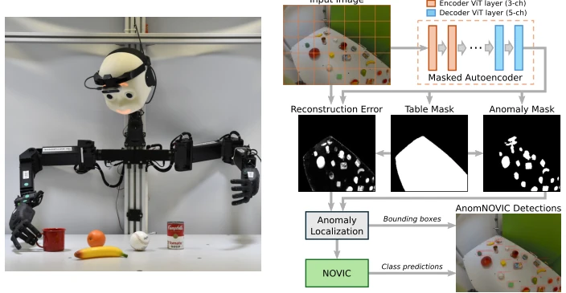
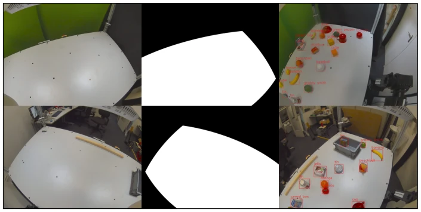
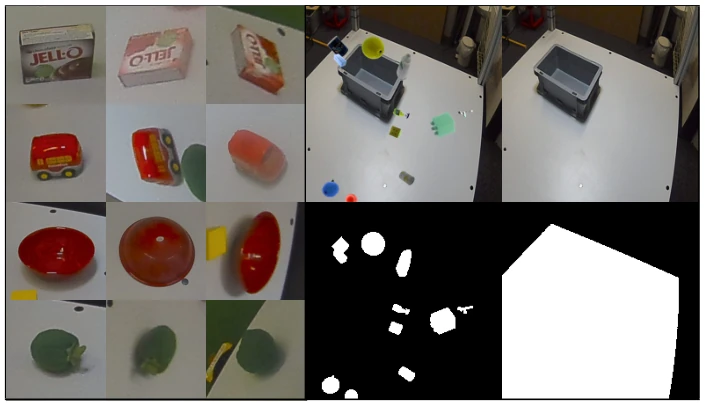
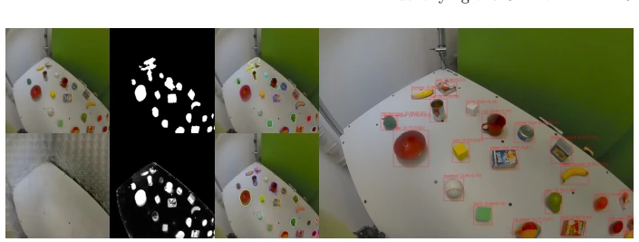
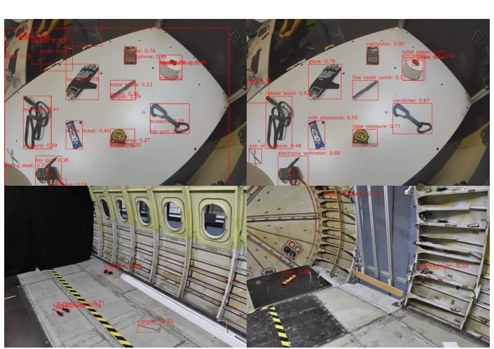

Identifying the Unknown: Prompt-Free Open Vocabulary Anomaly Recognition for Robot-Object Interaction
Philipp Allgeuer, Jan-Gerrit Habekost, Stefan Wermter abspdf
论文点评Review
这篇论文给机器人装了个“找茬”的脑子，AnomNOVIC 把“未知物体”直接定义为“异常”，用 MAE 重建空桌子来定位，再用 NOVIC 喊出名字。这招挺聪明，避开了传统开放词汇检测器必须提供候选类别的尴尬，实现了 Prompt-free。不过，它本质上还是“已知场景里的未知物体”，一旦桌子背景变了或者光照离谱，MAE 可能就瞎了，毕竟它只训练过空桌子。而且 NOVIC 虽然词库大，但推理速度能不能跟上机器人实时操作？表格里 AP 虽然高，但 AP50 和 AP 的差距暗示定位精度其实有点虚，全靠 SAM 救场。总的来说，是个不错的视觉感知补丁，但离真正的“开放世界”还有距离，毕竟它没法处理训练时没见过的桌子纹理，对动态环境适应性存疑。
This paper equips robots with an "anomaly spotting" brain. AnomNOVIC directly defines "unknown objects" as "anomalies", using MAE to reconstruct empty tables for localization, and then NOVIC to name them. This approach is quite clever, avoiding the awkwardness of traditional open-vocabulary detectors that must provide candidate categories, achieving Prompt-free. However, essentially it is still "unknown objects in known scenes". Once the table background changes or lighting becomes extreme, MAE might fail, after all it was only trained on empty tables. Moreover, although NOVIC has a large vocabulary, can its inference speed keep up with robot real-time operations? Although AP in the table is high, the gap between AP50 and AP implies localization accuracy is actually somewhat unreliable, relying entirely on SAM to compensate. Overall, it is a good visual perception patch, but still far from a true "open world", after all it cannot handle table textures unseen during training, and adaptability to dynamic environments is questionable.
For robots to achieve true autonomy, they must be able to recognize things they have not seen. Most existing open-vocabulary detectors are essentially "pseudo-open". SOTA models like ViLD [8], YOLO-World [5], and OWLv2 [13] still require a candidate class list (Prompted) during inference, which is like making the robot only stare at things specified by the boss, fundamentally unable to discover new species. Although YOLOE [18] claims to be Prompt-free, its vocabulary is only 4585 tags, still based on RAM, so the actual recognizable concepts are limited. If a concept is unseen in the training data, the model is basically blind. Therefore, the authors aim to solve the problem of real-time discovery and classification of arbitrary new objects without prompts within known workspaces, which is crucial for embodied intelligence interaction; otherwise, robots can only process what they were taught and cannot adapt to sudden situations in unstructured environments.

Fig. 1. Left: The LLM-powered NICOL is used in a human-robot-object interaction scenario requiring open vocabulary object detection. Right: A two-stage anomaly recognition model, AnomNOVIC, unites an anomaly detection masked autoencoder (MAE) with a strong prompt-free open vocabulary image classification model (NOVIC).
方法Method
核心是两阶段流水线。第一阶段用 MAE 做异常检测。训练时只喂空桌子的图，还搞了个“物体粘贴”增强，把虚拟物体贴上去但不让 MAE 重建，这样推理时桌上有东西就会重建失败，产生异常掩码。MAE 输出重建图、桌子掩码和异常掩码，三者结合生成无类别的边界框。第二阶段把裁剪出的异常区域扔给 NOVIC 分类。NOVIC 基于 CLIP，能直接输出自由文本标签。为了更准，还用了 SAM 2.1 优化边界框。损失函数分三部分：RGB 重建、桌子掩码、异常掩码，权重不同。推理时合并基于重建误差和基于掩码的异常，去重后输出。模型采用 ViT-B/16 架构，训练 2000 个 epoch，确保收敛。
The core is a two-stage pipeline. The first stage uses MAE for anomaly detection. During training, only images of empty tables are fed, and an "object pasting" augmentation is implemented, pasting virtual objects on but preventing MAE from reconstructing them, so that during inference, if there are objects on the table, reconstruction fails, producing an anomaly mask. MAE outputs the reconstruction image, table mask, and anomaly mask, which are combined to generate class-agnostic bounding boxes. The second stage feeds the cropped anomaly regions to NOVIC for classification. NOVIC is based on CLIP and can directly output free-text labels. For higher accuracy, SAM 2.1 is also used to optimize bounding boxes. The loss function is divided into three parts: RGB reconstruction, table mask, and anomaly mask, with different weights. During inference, reconstruction-error-based and mask-based anomalies are merged, deduplicated, and then output. The model adopts the ViT-B/16 architecture, trained for 2000 epochs to ensure convergence.

Fig. 2. Examples from our training (left, center) and test (right) datasets, with (bottom) and without (top) distractor objects. The training dataset only contains clean images of the workspace and corresponding table masks (making it quick and easy to collect), while the test dataset contains anomalous images with many (often overlapping) objects.

Fig. 3. Left: Easy, medium, and hard examples (left to right) of the jello, minibus, bowl, and green pepper test classes (top to bottom). Right: Example masked autoencoder input (top left), target reconstruction (top right), target anomaly mask (bottom left), and target table mask (bottom right), for the training dataset with distractor objects.

Fig. 4. Anomaly localization example, showing the input image, binary anomaly mask, mask-based anomalies, reconstructed image ˆI, reconstruction error score map Sr, reconstruction-based anomalies, and the final merged anomalies with corresponding prompt-free NOVIC classifications and NOVIC / merged MAE anomaly scores.
实验Experiments
在 NICOL 人形机器人桌上场景测试。数据集分 Plain、Distractors 和 Wild（48 种罕见物）。基线选了 YOLOE、OWLv2、YOLO-World-v2。结果 AnomNOVIC-S N-FT2 在 Plain 数据集 Prompt-free 下 AP 达 47.1%，远超 YOLOE 的 18.3%。Wild 数据集上准确率冲到 82.6%，而 YOLOE 才 14.2%。说明在复杂开放场景下，这方法确实能认更多东西。不过 AP 和 AP50 差距大，说明定位还是有点粗，加了 SAM 后 AP 提升明显。非 SAM 端到端耗时约 500ms，在 RTX A6000 上运行，实时性尚可。在飞机机身环境测试也展示了跨视角泛化能力。
Tested on the NICOL humanoid robot table scene. The dataset is divided into Plain, Distractors, and Wild (48 rare objects). Baselines selected include YOLOE, OWLv2, and YOLO-World-v2. Results show AnomNOVIC-S N-FT2 achieved an AP of 47.1% on the Plain dataset under Prompt-free conditions, far exceeding YOLOE's 18.3%. On the Wild dataset, accuracy surged to 82.6%, while YOLOE was only 14.2%. This indicates that in complex open scenes, this method can indeed recognize more objects. However, the large gap between AP and AP50 suggests localization is still somewhat coarse, and AP improved significantly after adding SAM. Non-SAM end-to-end latency is about 500ms, running on RTX A6000, with acceptable real-time performance. Testing on an aircraft fuselage environment also demonstrated cross-view generalization ability.

Fig. 5. Top: Prompt-free predictions of YOLOE-11L (left) and AnomNOVIC-S N-FT0 (right) on the Wild dataset, showing the starkly better performance of AnomNOVIC. Bottom: Prompt-free predictions with a moving camera in a fuselage environment.